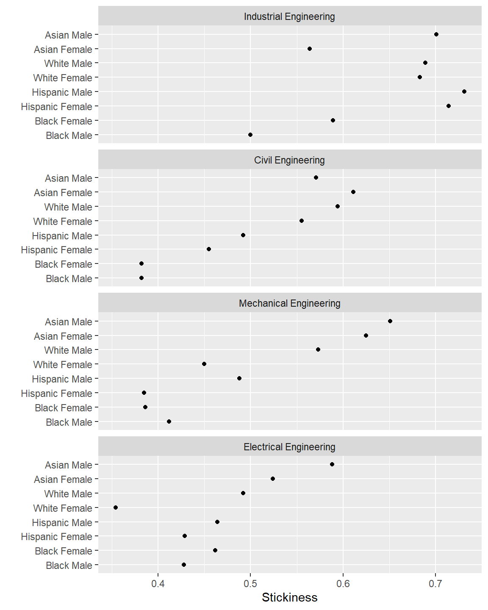

Longitudinal “stickiness” is the ratio of the number of students graduating in a program to the number of students ever enrolled in that program (Ohland and others, 2012).
The stickiness metric accounts for all students in a program. Unlike the graduation rate metric, stickiness includes students who begin college part-time, who enroll mid-year, and who switch majors or transfer between institutions.
Every student counted in a program’s stickiness metric was enrolled in that program for at least one term. The program succeeded in attracting these students—stickiness tells us how well the program succeeded in retaining them.
midfieldr functions
data.table syntax
DT[rows_we_want] subset rowsDT[, .(new_col = .N), by = grouping_variables] count N by groupDT[, new_col := FUN] create new column as a function of old columnsDT[rows_to_edit, col := value] for identified rows, assign value in columnpackages
In the Gather programs vignette (link), we create the program group of 6-digit codes and user-defined program names for the engineering case study. These data are included with midfieldr as the built-in data set rep_group. View its help page by running
? rep_groupThe data are loaded with midfieldr.
# obtain programs (built-in data set) program_group <- rep_group # examine the result program_group #> cip6 program #> 1: 140801 Civil Engineering #> 2: 140802 Civil Engineering #> 3: 140803 Civil Engineering #> 4: 140804 Civil Engineering #> 5: 140805 Civil Engineering #> 6: 140899 Civil Engineering #> 7: 141001 Electrical Engineering #> 8: 141003 Electrical Engineering #> 9: 141004 Electrical Engineering #> 10: 141099 Electrical Engineering #> 11: 141901 Mechanical Engineering #> 12: 143501 Industrial Engineering
We extract the cip6 column as a character vector to gather student data.
# extract a vector of 6-digit CIP codes group_cips <- program_group$cip6 # examine the result group_cips #> [1] "140801" "140802" "140803" "140804" "140805" "140899" "141001" "141003" #> [9] "141004" "141099" "141901" "143501"
We use filter_by_cip() to extract from midfieldstudents the IDs of students ever enrolled in these programs.
# gather students ever enrolled in programs enrollees <- filter_by_cip(midfieldterms, keep_cip = group_cips, # <---------------- group_cips from above keep_col = c("id", "cip6"), unique_row = TRUE ) # examine the result enrollees #> id cip6 #> 1: MID25783178 143501 #> 2: MID25783197 140801 #> 3: MID25783388 141901 #> 4: MID25783441 140801 #> 5: MID25783491 141001 #> --- #> 10760: MID26696967 141901 #> 10761: MID26696979 141901 #> 10762: MID26697163 141901 #> 10763: MID26697444 141901 #> 10764: MID26697447 141001
For convenience, the IDs of these enrollees are included in midfieldr as the built-in character vector rep_ever. View its help page by running
? rep_everFor some of these students, completing their program may not be feasible given the range of data available. feasible_subset() subsets the student IDs, retaining those who matriculate at least six years before the last term in the data.
# apply the feasible completion filter feasible_ids <- feasible_subset(id = enrollees$id) # examine the result str(feasible_ids) #> chr [1:8043] "MID25783178" "MID25783197" "MID25783388" "MID25783441" ...
See the Filter for program completion feasibility vignette (link) for a detailed explanation of how completion feasibility is determined.
# subset the enrollees rows_we_want <- enrollees$id %in% feasible_ids enrollees <- enrollees[rows_we_want] # examine the result enrollees #> id cip6 #> 1: MID25783178 143501 #> 2: MID25783197 140801 #> 3: MID25783388 141901 #> 4: MID25783441 140801 #> 5: MID25783491 141001 #> --- #> 8583: MID26696958 141901 #> 8584: MID26696967 141901 #> 8585: MID26697163 141901 #> 8586: MID26697444 141901 #> 8587: MID26697447 141001
We use filter_by_id() to extract from midfieldstudents the race/ethnicity and sex of the enrollees.
# obtain race/ethnicity and sex at matriculation race_sex <- filter_by_id(midfieldstudents, keep_id = feasible_ids, # <---------------- feasible_ids from above keep_col = c("id", "race", "sex"), unique_row = TRUE ) # examine the result race_sex #> id race sex #> 1: MID25783178 Black Male #> 2: MID25783197 White Male #> 3: MID25783388 White Male #> 4: MID25783441 White Male #> 5: MID25783491 White Male #> --- #> 8039: MID26696958 White Male #> 8040: MID26696967 White Male #> 8041: MID26697163 Hispanic Male #> 8042: MID26697444 White Male #> 8043: MID26697447 Asian Male
Now we can join the race/ethnicity and sex data frame to the enrollees data frame.
# left-join demographics to enrollees enrollees <- merge(enrollees, race_sex, by = "id", all.x = TRUE) # examine the result enrollees #> id cip6 race sex #> 1: MID25783178 143501 Black Male #> 2: MID25783197 140801 White Male #> 3: MID25783388 141901 White Male #> 4: MID25783441 140801 White Male #> 5: MID25783491 141001 White Male #> --- #> 8583: MID26696958 141901 White Male #> 8584: MID26696967 141901 White Male #> 8585: MID26697163 141901 Hispanic Male #> 8586: MID26697444 141901 White Male #> 8587: MID26697447 141001 Asian Male
We join the program names from program_group to our working data frame so we can aggregate by groups in a future step.
# left-join program_group to enrollees enrollees <- merge(enrollees, program_group, by = "cip6", all.x = TRUE) # examine the result enrollees #> cip6 id race sex program #> 1: 140801 MID25783197 White Male Civil Engineering #> 2: 140801 MID25783441 White Male Civil Engineering #> 3: 140801 MID25783553 White Male Civil Engineering #> 4: 140801 MID25784209 International Male Civil Engineering #> 5: 140801 MID25784489 Asian Female Civil Engineering #> --- #> 8583: 143501 MID26693368 White Male Industrial Engineering #> 8584: 143501 MID26695188 White Male Industrial Engineering #> 8585: 143501 MID26695626 White Male Industrial Engineering #> 8586: 143501 MID26696116 White Female Industrial Engineering #> 8587: 143501 MID26696429 White Female Industrial Engineering
A similar process is used to group and summarize our graduates. We use filter_by_cip() to extract from midfielddegrees the IDs of students graduating from these programs. We skip the feasible completion step because for graduates, the question of completion feasibility is moot—graduation itself establishes feasibility.
# gather students graduating from programs graduates <- filter_by_cip(midfielddegrees, keep_cip = group_cips, # <---------------- group_cips again from above keep_col = c("id", "cip6"), unique_row = TRUE, first_degree = TRUE ) race_sex <- filter_by_id(midfieldstudents, keep_id = graduates$id, # <---------------- from graduates just above keep_col = c("id", "race", "sex"), unique_row = TRUE ) graduates <- merge(graduates, race_sex, by = "id", all.x = TRUE) graduates <- merge(graduates, program_group, by = "cip6", all.x = TRUE) # examine the result graduates #> cip6 id race sex program #> 1: 140801 MID25783197 White Male Civil Engineering #> 2: 140801 MID25783441 White Male Civil Engineering #> 3: 140801 MID25784334 White Female Civil Engineering #> 4: 140801 MID25784418 White Male Civil Engineering #> 5: 140801 MID25784489 Asian Female Civil Engineering #> --- #> 4672: 143501 MID26689274 White Male Industrial Engineering #> 4673: 143501 MID26692926 White Male Industrial Engineering #> 4674: 143501 MID26695626 White Male Industrial Engineering #> 4675: 143501 MID26696116 White Female Industrial Engineering #> 4676: 143501 MID26696429 White Female Industrial Engineering
For convenience, the IDs of these graduates are included in midfieldr as the built-in character vector rep_grad. View its help page by running
? rep_gradTo frame our results in terms of program, race/ethnicity, and sex, we assign these variables as our grouping variables.
# assign variables to aggregate by grouping_variables <- c("program", "race", "sex")
We count the number of students in each grouping. The count is assigned to the new ever column.
# group and summarize grouped_enrollees <- enrollees[, .(ever = .N), by = grouping_variables] # examine the result grouped_enrollees #> program race sex ever #> 1: Civil Engineering White Male 1191 #> 2: Civil Engineering International Male 14 #> 3: Civil Engineering Asian Female 18 #> 4: Civil Engineering White Female 346 #> 5: Civil Engineering Black Male 102 #> --- #> 59: Industrial Engineering Native American Male 1 #> 60: Industrial Engineering Other Female 4 #> 61: Industrial Engineering Unknown Male 1 #> 62: Industrial Engineering Unknown Female 2 #> 63: Industrial Engineering Native American Female 1
Note the change in the size of the data frame, from 8587 in enrollees where every row is a student to 63 in the grouped_enrollees below where every row is a group.
Repeat for the graduates, creating the new grad column.
# group and summarize grouped_graduates <- graduates[, .(grad = .N), by = grouping_variables] # examine the result grouped_graduates #> program race sex grad #> 1: Civil Engineering White Male 708 #> 2: Civil Engineering White Female 192 #> 3: Civil Engineering Asian Female 11 #> 4: Civil Engineering Black Male 39 #> 5: Civil Engineering Asian Male 24 #> --- #> 56: Industrial Engineering Asian Female 22 #> 57: Industrial Engineering Other Male 4 #> 58: Industrial Engineering International Female 4 #> 59: Industrial Engineering Other Female 4 #> 60: Industrial Engineering Unknown Male 1
We join the two data frames by our grouping variables, producing a data frame with ever and grad for each group. Note that we have 63 groupings of enrollees but only 60 groupings of graduates. Some enrollee groups have no graduates.
# left-join graduates to enrollees grouped_data <- merge(grouped_enrollees, grouped_graduates, by = grouping_variables, # <---------------- the grouping variables again all.x = TRUE ) # examine the result, ordered by program grouped_data[order(program)] #> program race sex ever grad #> 1: Civil Engineering Asian Female 18 11 #> 2: Civil Engineering Asian Male 42 24 #> 3: Civil Engineering Black Female 55 21 #> 4: Civil Engineering Black Male 102 39 #> 5: Civil Engineering Hispanic Female 11 5 #> --- #> 59: Mechanical Engineering Other Male 47 28 #> 60: Mechanical Engineering Unknown Female 5 3 #> 61: Mechanical Engineering Unknown Male 15 9 #> 62: Mechanical Engineering White Female 313 141 #> 63: Mechanical Engineering White Male 2035 1166
There are 3 NA entries in the grad column where we have enrollees but no graduates. To see them more directly:
# begin work on computing the metric stickiness <- grouped_data # identify NA values rows_with_degree_NA <- is.na(stickiness$grad) stickiness[rows_with_degree_NA] #> program race sex ever grad #> 1: Industrial Engineering Native American Female 1 NA #> 2: Industrial Engineering Native American Male 1 NA #> 3: Industrial Engineering Unknown Female 2 NA
We convert the NA values in the grad column to zero.
# convert grad NA to zero stickiness[rows_with_degree_NA, grad := 0] # examine the result stickiness[rows_with_degree_NA] #> program race sex ever grad #> 1: Industrial Engineering Native American Female 1 0 #> 2: Industrial Engineering Native American Male 1 0 #> 3: Industrial Engineering Unknown Female 2 0
We omit rows with zero students ever enrolled, if any, to avoid dividing by zero.
# prevent division by zero rows_we_want <- stickiness$ever > 0 stickiness <- stickiness[rows_we_want]
Divide grad by ever to compute stickiness.
# compute stickiness stickiness[, stick := round(grad / ever, 2)] # examine the result stickiness #> program race sex ever grad stick #> 1: Civil Engineering Asian Female 18 11 0.61 #> 2: Civil Engineering Asian Male 42 24 0.57 #> 3: Civil Engineering Black Female 55 21 0.38 #> 4: Civil Engineering Black Male 102 39 0.38 #> 5: Civil Engineering Hispanic Female 11 5 0.45 #> --- #> 59: Mechanical Engineering Other Male 47 28 0.60 #> 60: Mechanical Engineering Unknown Female 5 3 0.60 #> 61: Mechanical Engineering Unknown Male 15 9 0.60 #> 62: Mechanical Engineering White Female 313 141 0.45 #> 63: Mechanical Engineering White Male 2035 1166 0.57
To see the class of each column:
# name and class of variables (columns) sapply(stickiness, FUN = class) #> program race sex ever grad stick #> "character" "character" "character" "integer" "integer" "numeric"
The stickiness data derived above is the data set rep_stickiness in midfieldr. View its help page by running
? rep_stickinessBefore graphing, we isolate the three multiway variables (program, combined race and sex, and stickiness) and transform the categorical variables into factors with levels that are ordered by median stickiness.
In the Explore multiway data vignette (link), we describe this transformation in detail. The transformed multiway data are included with midfieldr as the built-in data set rep_stickiness_mw. View its help page by running
? rep_stickiness_mwThe data are loaded with midfieldr.
# condition the data in multiway form (built-in data set) data_mw <- rep_stickiness_mw data_mw #> program race_sex stick #> 1: Civil Engineering Asian Female 0.611 #> 2: Civil Engineering Asian Male 0.571 #> 3: Civil Engineering Black Female 0.382 #> 4: Civil Engineering Black Male 0.382 #> 5: Civil Engineering Hispanic Female 0.455 #> --- #> 28: Mechanical Engineering Black Male 0.412 #> 29: Mechanical Engineering Hispanic Female 0.385 #> 30: Mechanical Engineering Hispanic Male 0.488 #> 31: Mechanical Engineering White Female 0.450 #> 32: Mechanical Engineering White Male 0.573
The attributes of the data frame confirm that the categorical variables are factors and not characters. The median values by which the factor levels are ordered are shown in the scores attributes.
# name and class of variables (columns) sapply(data_mw, FUN = attributes) #> $program #> $program$levels #> [1] "Electrical Engineering" "Mechanical Engineering" "Civil Engineering" #> [4] "Industrial Engineering" #> #> $program$class #> [1] "factor" #> #> $program$scores #> Civil Engineering Electrical Engineering Industrial Engineering #> 0.5235 0.4630 0.6860 #> Mechanical Engineering #> 0.4690 #> #> #> $race_sex #> $race_sex$levels #> [1] "Black Male" "Black Female" "Hispanic Female" "Hispanic Male" #> [5] "White Female" "White Male" "Asian Female" "Asian Male" #> #> $race_sex$class #> [1] "factor" #> #> $race_sex$scores #> Asian Female Asian Male Black Female Black Male Hispanic Female #> 0.5875 0.6195 0.4240 0.4200 0.4420 #> Hispanic Male White Female White Male #> 0.4900 0.5025 0.5835 #> #> #> $stick #> NULL
We use conventional ggplot2 functions to graph the data_mw data set in a multiway graph.
# graph results ggplot(data = data_mw, mapping = aes(x = stick, y = race_sex)) + facet_wrap(facets = vars(program), ncol = 1, as.table = FALSE) + geom_point(na.rm = TRUE) + labs(x = "Stickiness", y = "")

For more information on multiway data and interpreting multiway graphs, see the Explore multiway data vignette (link).
Ohland M, Orr M, Layton R, Lord S and Long R (2012) Introducing stickiness as a versatile metric of engineering persistence. Proceedings of the Frontiers in Education Conference. 1–5
The vignette code chunks are collected below in a single, condensed script.
# packages used library(midfieldr) library(midfielddata) library(data.table) library(ggplot2) # obtain programs (built-in data set) program_group <- rep_group group_cips <- program_group$cip6 # gather students ever enrolled in programs enrollees <- filter_by_cip(midfieldterms, keep_cip = group_cips, keep_col = c("id", "cip6"), unique_row = TRUE ) feasible_ids <- feasible_subset(id = enrollees$id) rows_we_want <- enrollees$id %in% feasible_ids enrollees <- enrollees[rows_we_want] race_sex <- filter_by_id(midfieldstudents, keep_id = feasible_ids, keep_col = c("id", "race", "sex"), unique_row = TRUE ) enrollees <- merge(enrollees, race_sex, by = "id", all.x = TRUE) enrollees <- merge(enrollees, program_group, by = "cip6", all.x = TRUE) # gather students graduating from programs graduates <- filter_by_cip(midfielddegrees, keep_cip = group_cips, keep_col = c("id", "cip6"), unique_row = TRUE, first_degree = TRUE ) race_sex <- filter_by_id(midfieldstudents, keep_id = graduates$id, keep_col = c("id", "race", "sex"), unique_row = TRUE ) graduates <- merge(graduates, race_sex, by = "id", all.x = TRUE) graduates <- merge(graduates, program_group, by = "cip6", all.x = TRUE) # group, summarize, and join grouping_variables <- c("program", "race", "sex") grouped_enrollees <- enrollees[, .(ever = .N), by = grouping_variables] grouped_graduates <- graduates[, .(grad = .N), by = grouping_variables] grouped_data <- merge(grouped_enrollees, grouped_graduates, by = grouping_variables, all.x = TRUE ) # compute the metric stickiness <- grouped_data rows_with_degree_NA <- is.na(stickiness$grad) stickiness[rows_with_degree_NA, grad := 0] rows_we_want <- stickiness$ever > 0 stickiness <- stickiness[rows_we_want] stickiness[, stick := round(grad / ever, 2)] # condition the data in multiway form (built-in data set) data_mw <- rep_stickiness_mw # graph results ggplot(data = data_mw, mapping = aes(x = stick, y = race_sex)) + facet_wrap(facets = vars(program), ncol = 1, as.table = FALSE) + geom_point(na.rm = TRUE) + labs(x = "Stickiness", y = "")